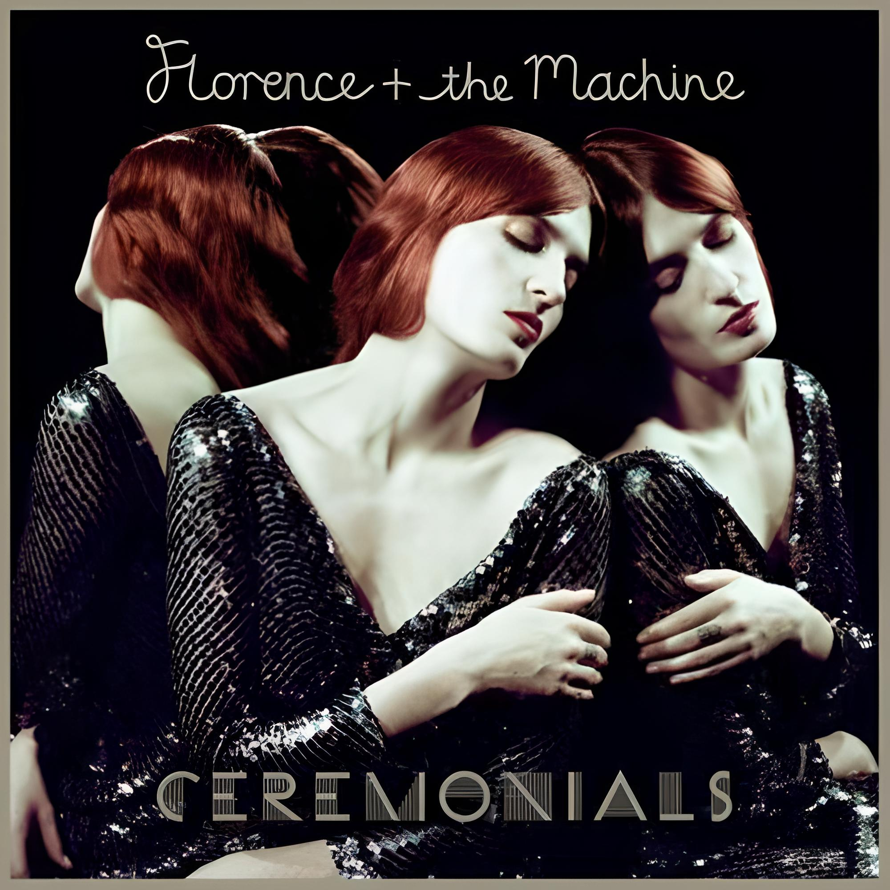
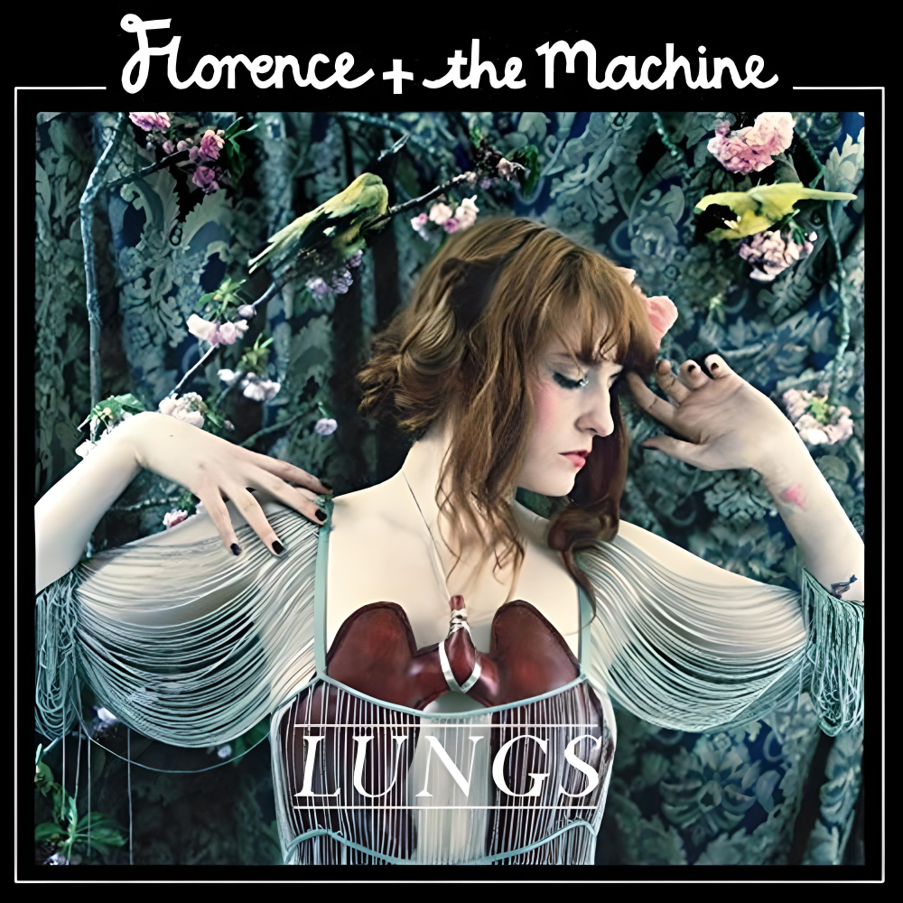

Somos um site feito por fãs para servir como portal de notícias, rede de análise e compartilhamento de teorias acerca do trabalho da banda Florence + The Machine. Aqui você pode acessar as páginas da artista além de acessar nossas páginas dedicadas aos álbuns de sua discografia. Espero que goste!
Florence + the Machine é uma banda alternativa inglesa, co-fundada pela vocalista, Florence Welch , e pela tecladista e produtora, Isabella Summers . A banda foi inicialmente administrada por Mairead Nash (LuvLuvLuv), que também gerenciou a dupla original, conhecida na época como 'Florence Robot/Isa Machine', depois que Florence Welch cantou Etta James ' "Something's Got A Hold On Me" para ela em um banheiro do clube em dezembro de 2006. Agora é administrado por Hannah Giannoulis, que fazia parte da equipe original de gerenciamento do LuvLuvLuv.
A banda primeiro encontrou fama em seu Reino Unido natal. Seu álbum de estreia, Lungs (2009), ganhou ouro na primeira semana de lançamento, platina em menos de 6 meses e 4x platina em pouco mais de um ano. Eles invadiram o mercado dos EUA após uma elaborada performance de "Dog Days Are Over" no VMAs de 2010. Seu segundo álbum, Ceremonials (2011), estreou em primeiro lugar nas paradas do Reino Unido , Irlanda , Austrália e Nova Zelândia . A banda embarcou em sua segunda turnê baseada em arena, a Cerimonials Tour.
Em julho de 2012, Florence + the Machine lançou "Spectrum (Say My Name)" remixado por Calvin Harris. O tiro único para o sucesso nas paradas musicais em todo o mundo. Até o momento, é o single mais vendido no Reino Unido. Junho de 2015 trouxe o tão esperado terceiro álbum da banda, How Big, How Blue, How Beautiful. O álbum e os singles principais, "Ship to Wreck" e "What Kind of Man", foram indicados coletivamente para cinco prêmios GRAMMY. Durante a turnê do álbum em 2015, a banda foi a atração principal do Glastonbury Festival no palco Pyramid, depois que o Foo Fighters desistiu devido a uma lesão, para aclamação da crítica. O jornal britânico The Telegraph descreveu a apresentação como "música pop da mais alta ordem".
Em 2016, a banda contribuiu para duas trilhas sonoras: Final Fantasy XV e Miss Peregrine's Home For Peculiar Children com “ Wish That You Were Here ”. “Sky Full Of Song” foi lançado para o Record Store Day 2018, iniciando rumores de um novo álbum. A banda anunciou oficialmente seu retorno em maio de 2018 com o single principal, " Hunger ", de seu quarto álbum, High As Hope. Em março de 2022, a banda anunciou o lançamento de seu 5º álbum Dance Fever após a postagem de misteriosas cartas de tarô para os fãs com o título do primeiro single King.
Fonte: Genius, Florence + The Machine